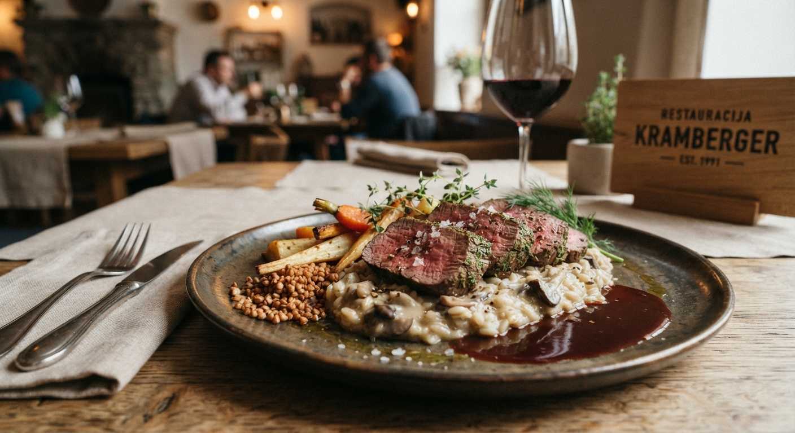
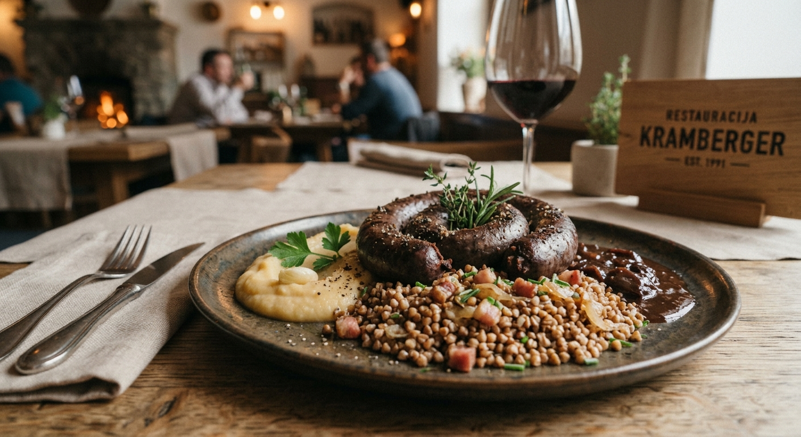
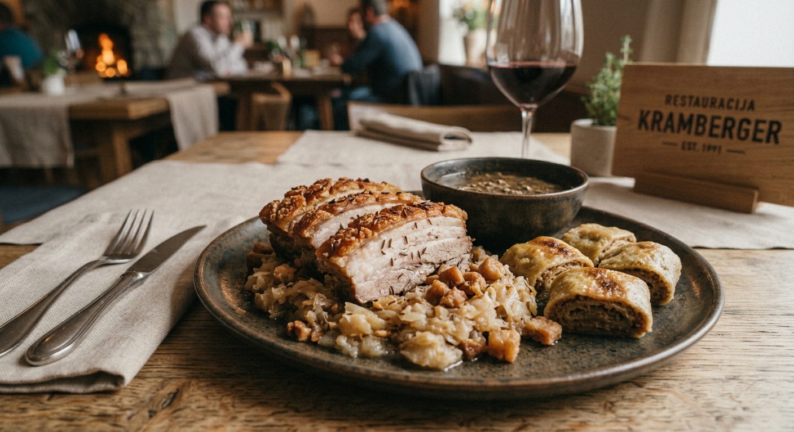

Zrezek v omaki
Svež zrezek v okusni omaki s sveže pobranimi domačimi jurčki.
V Restavraciji Kramberger verjamemo, da dobra hrana združuje ljudi in ustvarja nepozabne trenutke. Z ljubeznijo do kulinarike, skrbno izbranimi sestavinami in prijetnim ambientom vam ponujamo prostor, kjer lahko uživate v odlični hrani in prijetni družbi. Naj bo to sproščeno kosilo, posebna večerja ali praznovanje pomembnih trenutkov, pri nas ste vedno dobrodošli.
Rezervirajte mizo tukajRestavracija Kramberger je bila ustanovljena leta 2005 s ciljem ponujati odlično kuhinjo in izjemno storitve. Restavracija Kramberger je nastala iz želje po ustvarjanju prostora, kjer se prepletajo odlična kulinarika, prijetno vzdušje in pristno gostoljubje. Verjamemo, da restavracija ni le prostor za obedovanje, temveč kraj, kjer nastajajo lepi spomini, se srečujejo prijatelji in družine ter delijo posebni trenutki. Naša ekipa se zaveda pomembnosti kvalitete in autentičnosti, zato uporabljamo le najboljše sestavine in tradicionalne recepte.

Svež zrezek v okusni omaki s sveže pobranimi domačimi jurčki.

Tradicionalna slovenska jed s sveže pobranimi domačimi jurčki in krompirjem.

Tradicionalna slovenska jed s prilogami, pripravljena po starem hišnem receptu.